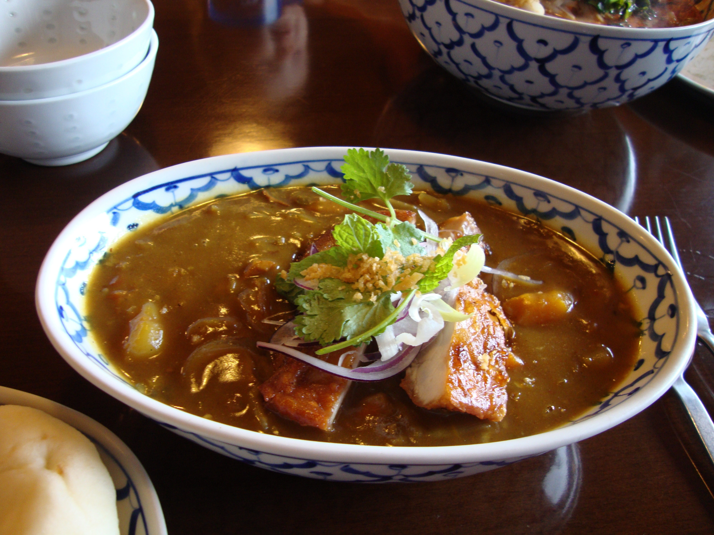

Japanese Curry
Home
Mapo Tofu
Japanese Curry
Something else

Ingredients
400g onion - sliced
250g potato - cut in to cubes
100g carrot - sliced
1tbsp canola oil
3-5 cubes of Golden Curry
4.5 cups of water
4 cups of rice
4 chicken cutlets
Steps